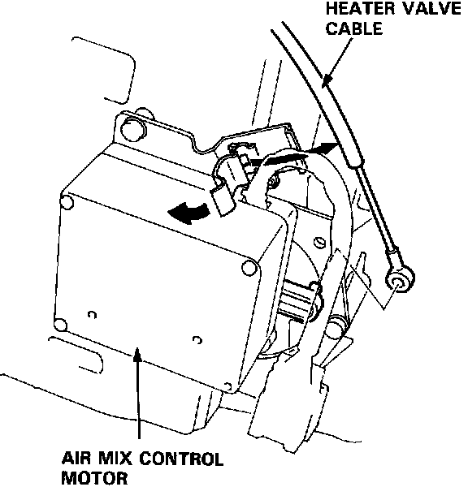
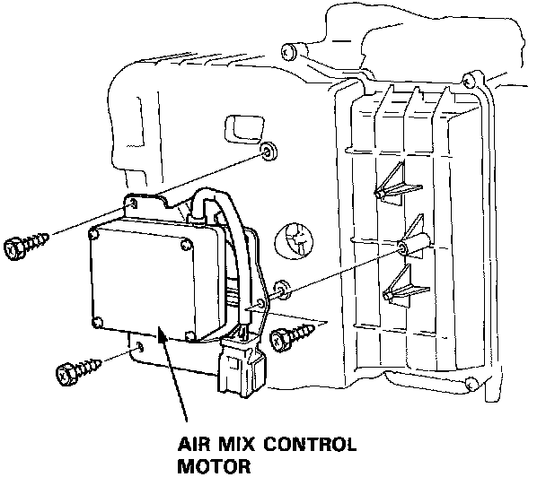
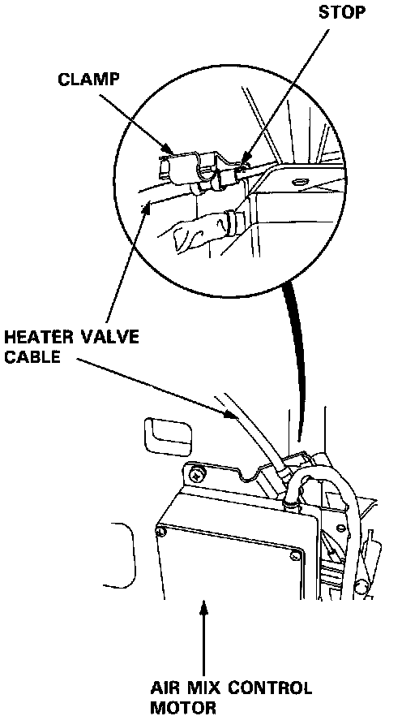

Air Mix Control Motor Replacement
Air Mix Control Motor Replacement
1. Disconnect the heater valve cable from the air mix control motor.

2. Remove the air mix control motor (3 screws, 1 connector).
3. Install the air mix control motor in the reverse order of removal. Then apply battery voltage, and watch the door move.
- Make sure that the air mix door moves smoothly without binding.
- Make sure the motor doesn't pull the air mix door too far.

4. If necessary, to adjust the heater valve cable:
- Set the air mix control motor at COLD position with the cable disconnected at the valve.
- Hold the end of the cable housing against the stop on the cable. Then snap the clamp down over the housing.
- After adjusting the cable, make sure that the air mix control motor still moves smoothly without binding.